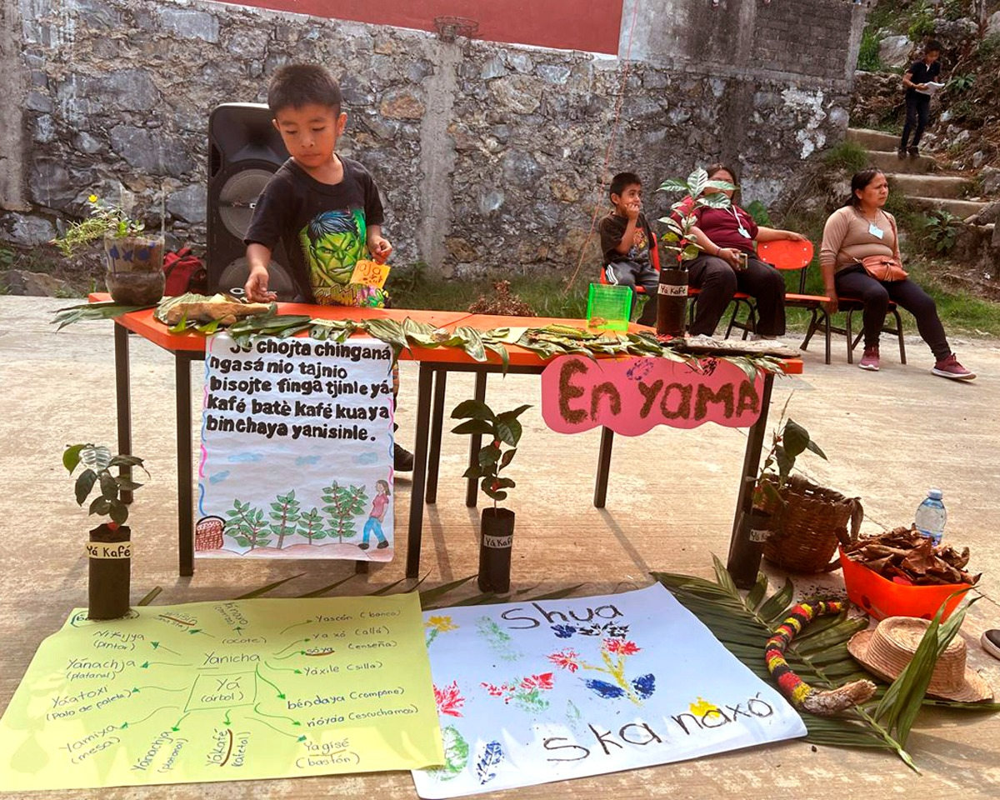

La cultura de la diversidad lingüística en México se manifiesta a través de la presencia de 68 lenguas indígenas, además del español, lo que convierte a México en un país multilingüe con una rica variedad cultural. Estas lenguas, junto con sus numerosas variantes, son consideradas parte del patrimonio cultural e identidad de los pueblos indígenas.
México es un país con una rica diversidad lingüística que se entrelaza con diversas culturas indígenas.
Entre ellas, los Náhuas, que hablan náhuatl y celebran el Día de Muertos; los Mayas, conocidos por sus avances en matemáticas y lenguas como el yucateco, que celebran festivales agrícolas; los Mixtecos, de Oaxaca y Guerrero, famosos por sus códices
y leyendas; los Zapotecos, también de Oaxaca, destacados en música y danzas; los Purépechas de Michoacán, con tradiciones culinarias y festivales; los Totonacas en Puebla y Veracruz, conocidos por el ritual del "Volador"; los Mazahuas del Estado de México, que mantienen una rica tradición oral; y los Otomí, también del Estado de México, que celebran su
identidad a través de danzas y festividades. Cada una de estas culturas preserva su lengua y tradiciones, enriqueciendo el patrimonio cultural de México.
